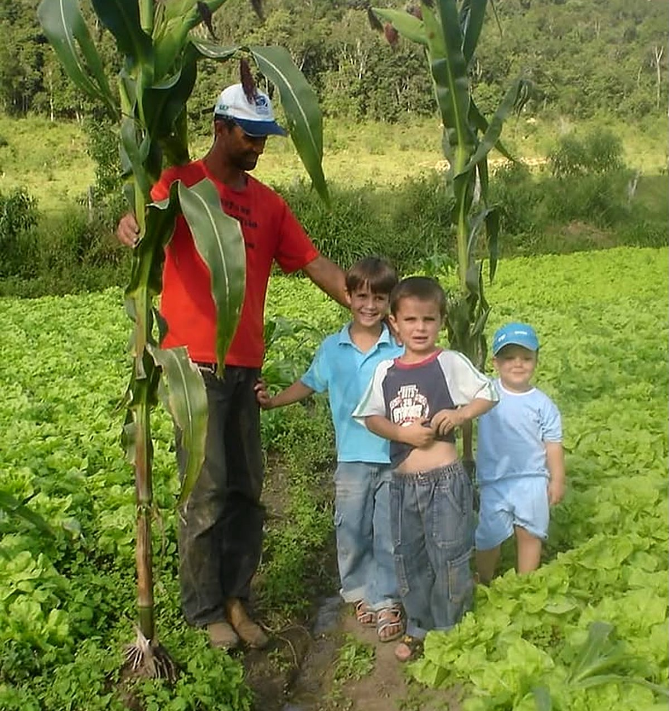
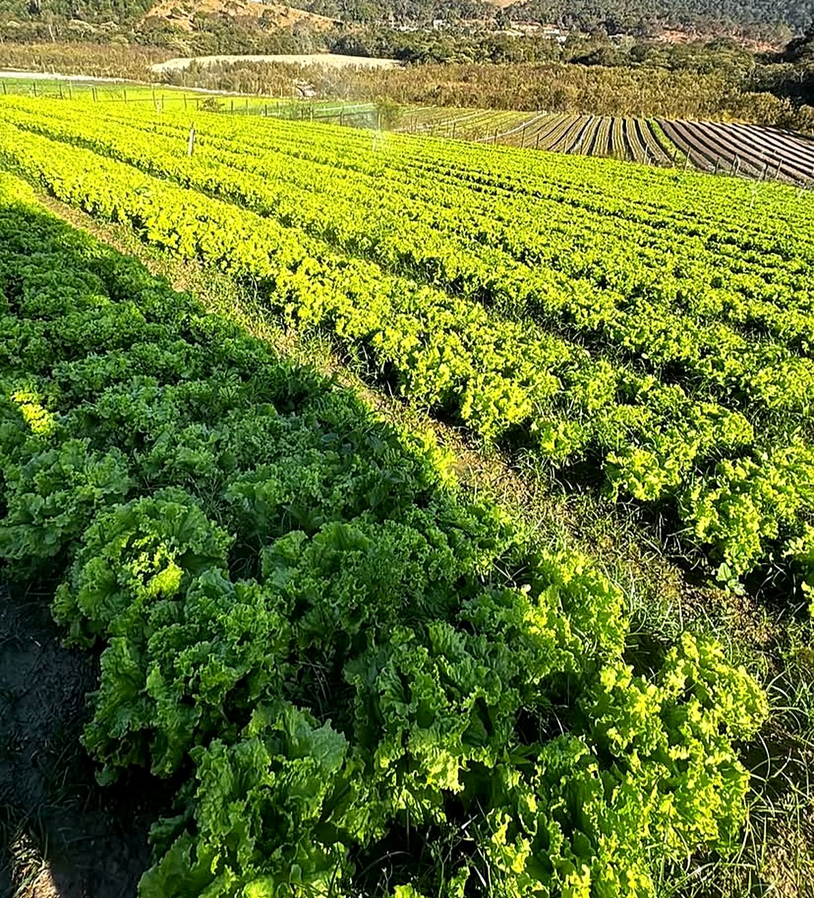
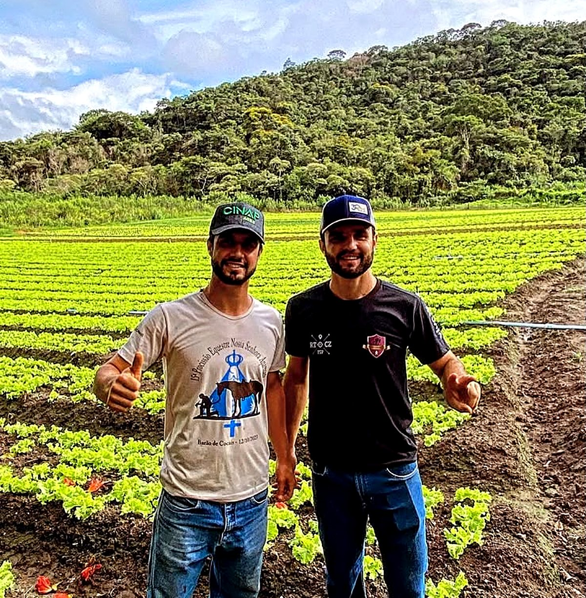

Produtor rural · Hortaliças
Do nosso chão
para a sua mesa.
Plantio em família, feito com amor, carinho e cuidado em cada folha. Direto de Antônio dos Santos, Caeté — MG.

Nossa raiz
Uma história que nasceu no chão
Em 2006, Gilson posava no meio da horta ao lado dos filhos Matheus e Marco Túlio e do sobrinho João Vitor, ainda pequenos, entre alfaces e pés de milho mais altos que eles. Foi desse chão que nasceu a produção que temos hoje.
O tempo passou e seguimos firmes: a AgroSena é de Matheus e Marco Túlio, que cresceram nessa terra e hoje cuidam dela em família, com as mãos no chão e o coração no que fazem.
Plantio familiar
Cuidado em cada folha
Aqui ninguém planta por acaso. Cada canteiro é acompanhado de perto, com paciência e respeito pela terra, porque o que colhemos vai para a mesa de outras famílias.
- 01
Cultivo sustentável
Respeito ao solo, à água e ao tempo de cada planta.
- 02
Colheita selecionada
Folha por folha, escolhida à mão no ponto certo.
- 03
Do campo para você
Frescor que chega rápido, direto de quem produz.
- 04
Saúde para sua família
Alimento de verdade, feito como se fosse para a nossa casa.
Família AgroSena
Gente que ama o que faz


Parcerias
Seja um parceiro AgroSena
Restaurante, mercado, sacolão, feira ou distribuidor? Venha crescer com a gente e leve hortaliças frescas, de produção familiar, para o seu negócio.
- Envie sua mensagem
- Conversamos sobre volumes e entregas
- Você recebe hortaliça fresca, direto do campo
Marco Túlio e Matheus
(31) 97135-4032
Onde estamos
Antônio dos Santos, Caeté — MG
Nossa lavoura fica no interior de Minas Gerais, cercada de serra e muito verde.
Ver no mapa